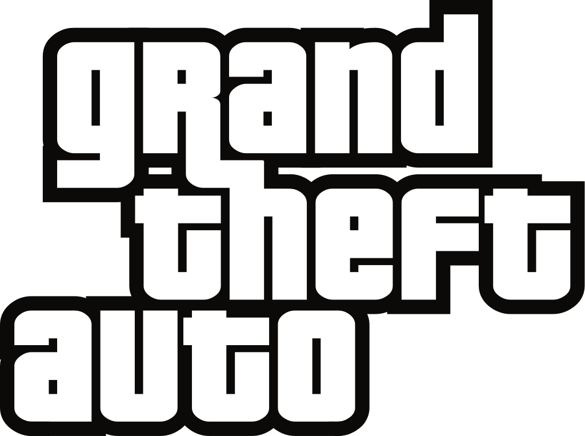
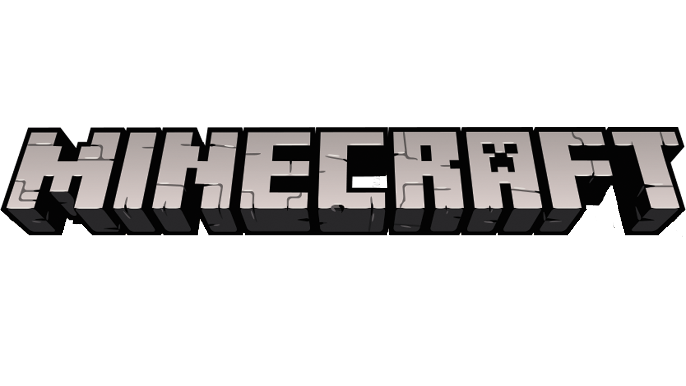
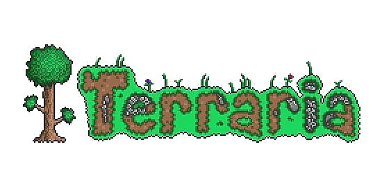
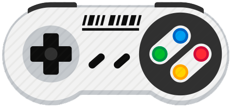

Descrição:
"Este site vai servir para mostrar os jogos que eu jogo, como estou neles, e outras coisas sobre jogos." ~Izaque Sanvezzo(stake2)
Tutorial: Clique nos botões abaixo como nos outros sites.
Descrição:
"Aqui mostra os jogos que eu jogo ou já joguei." ~Izaque Sanvezzo(stake2)

---
"Eu gosto muito desse jogo, por que eu jogo desde minha infância,
e por que foi um dos primeiros jogos que já joguei na vida."

---
"Eu gosto muito desse jogo, por que foi, de novo, da minha infância kk, eu jogo desde
2011 eu acho, e jogo até hoje, igual gta."

---
"Eu gosto muito desse jogo, por que foi da minha infância, pelos seus gráficos, sua trilha sonora
Sua ambientação, e por ter muito mais coisa do que minecraft kkkk."

---
"Eu gosto muito desses jogos, por que foi da minha infância, os primeiros jogos que já joguei
junto com Minecraft, gta e Terraria."
Descrição:
"Aqui mostra os jogos recentes que eu joguei,
Isso funciona como top-down, ou seja, os jogos que joguei hoje
ficarão em primeiro lugar, e os que joguei semana passada
ficarão por ultimo, também mostra a data que eu joguei como (18:40 22/02/2019)." ~Izaque Sanvezzo(stake2)
Descrição:
"Aqui mostra como estou nos jogos,
quando joguei, em que dificuldade to, quanto de dano, moedas, pontos, diamantes." ~Izaque Sanvezzo(stake2)
02:37 01/09/2018 \/
10:37 01/09/2018, 8 Horas Se Passaram. \/
00:34 05/09/2018, 4 Dias se Passaram. \/
23:18 20/09/2018, 15 Dias se Passaram.
00:24 19/10/2018, 29 Dias se Passaram. \/
00:20 04/02/2019:
Got "A Frantic Frigate", "Hang on, I saw that boat somewhere...",
Discovered new worlds, new terrains, made 4th challenge,
Got 3rd chest, level 280,
1,006 orbs +288
36 diamonds, 66 bloodstones,
8.45Q DPS
Got 9th monster, 10th The Tomb King = 50T Skulls
23:40 15/02/2019:
-----
Transport Defender =
-----
10:46 01/09/2018
After Login:
Sector 883
2108 Cargo, 2252 L.Cargo
Transfer 22048 +333.32% sector, +545.76 Duration
1.41E58
After Reset:
Sector 133
24360 Cargo, L.Cargo 13.6
Transfer 13, +0.00%, +0.00%
1.08E16
After Upgrade:
Sector 171
42.613 Cargo, L.Cargo 23.6
Transfer 27, +0.00%, +0.00%
1.13E18
-----